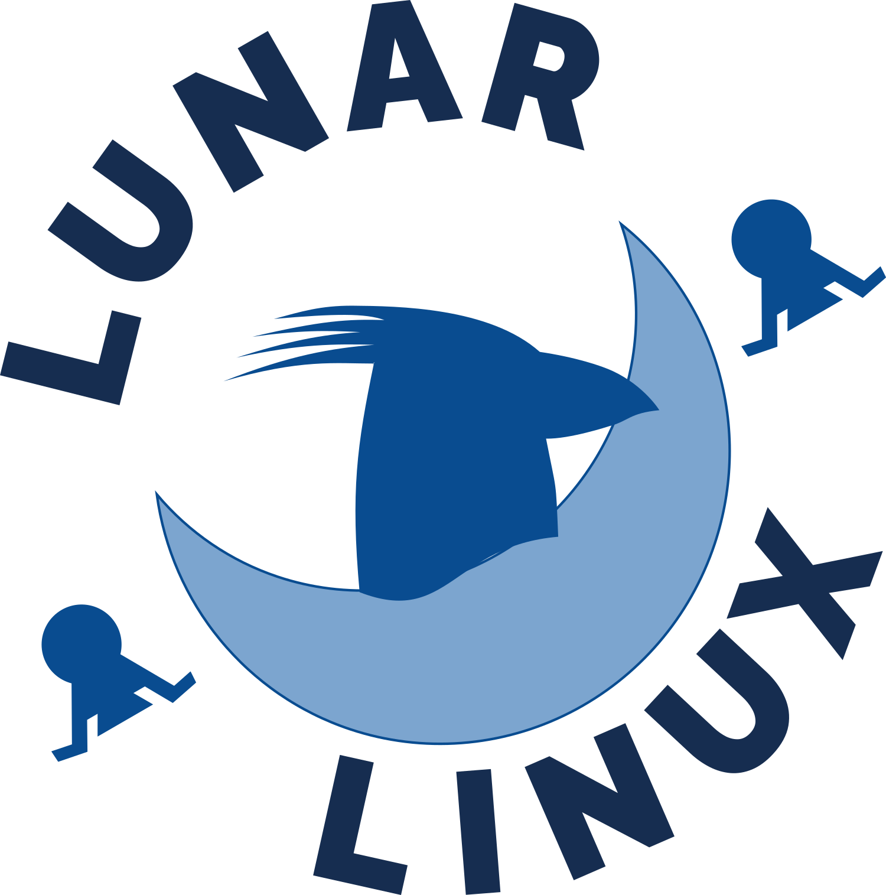
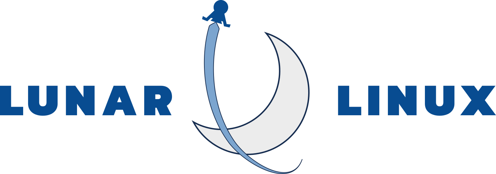
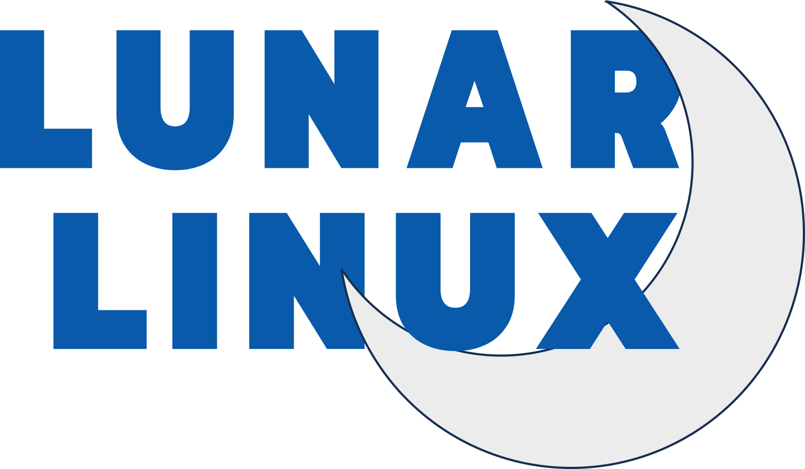

ABOUT
Updated based on our discussions: a brighter colour scheme, and the logo reuses the blues from the original logo. The navigation bar is reworked a bit as well.
I’ve also included some of my other logo designs, directly below. The colours can be changed quickly if you ask.
LOGO TESTS
there's seven logos, and each can easily have the colours changed as needed. Right now, they're all using the two blues from the original logo, plus a darker blue for emphasis when needed.
I went through three phases of design - I started with a lunar lander, then the rockhead profile, then the crescent moon. The connection of the visuals are to the name Lunar Linux:
- the crescent is connected to the lunar name.
- the penguin is part of the Linux tradition.
The lander didn't have a direct connection, so I stopped developing it as a standalone logo element. But I do like it as a logo, and it could be used elsewhere in the site.



APPLICATIONS
list of commonly used apps that everyone wants to know about - this again depends on the target audience. Either we want to reassure everyone that it has all the usual programs that every Linux distro has, or we want to show things that set it apart. Do we have applications that others don’t? Is our app list oriented to a certain type of user? For example, we have lots of command-line apps.
Maybe we should mention how the package manager is easy to use and the user can create their own modules for apps that aren’t included by default.


DOWNLOAD
Considering the rolling release nature of Lunar, users should probably be pointed to the newest nightly, rather than the year-old 1.8.0 release candidate.
Or maybe there should be monthly or quarterly releases? Is chasing a point release number actually useful for Lunar?
Regardless, there should be some text here describing the difference between the stable and the nightly, and what the user can expect from each.